Главное
- Род Медковых по прямой линии прослежен на шесть поколений вверх от Николая, до Ивана Карповича (около 1767 г.). Все они — крестьяне сельца Юренево Волоколамского уезда (прихожане Троицкой церкви села Никольского). До 1861 года они были крепостными: до начала 1830-х — помещиков Зариных, затем Смирнова. подтверждено
- Прапрадед — Никита Яковлевич, родился 10 сентября 1830 года. Его отец — Яков Иванович, мать — Праскева Антоновна. В одном дворе жили два родных брата с одинаковым именем «Яков Иванов». Наш Яков — старший, его жену звали Праскева Антоновна. Различить братьев удалось только по жёнам в исповедных ведомостях. подтверждено
- Прадед — Иван Никитич Медков, родился около 1862–1864 годов. В 1889 году, служа рядовым 94-го пехотного Енисейского полка, он женился на Анне, дочери крестьянина Адриана Матвеева из села Раменье. Их сын Сергий родился 5 августа 1897 года. подтверждено
- Сергей Иванович Медков 1897 г. р., живший в Ханеве и воевавший до Кёнигсберга, — по всей видимости, тот самый Сергий из Юренева. Совпадают имя, отчество, фамилия и год рождения. Документа, прямо связывающего эти записи, нет. вероятно
- Мать Николая, Лиза, — по всей видимости, Елизавета Симеоновна Филиппова, родившаяся 12 октября 1904 года в деревне Петровской. Её родители — Симеон Филиппович Филиппов (1869) и Феодосия Христофоровна (около 1872). вероятно
- Братья Николая — Леонид, Виктор и Валентин. Виктор назван в документах вместе с Николаем. Леонид и Валентин известны со слов семьи. Виктор — подтверждено Леонид, Валентин — по сведениям семьи
Кто он
Николай Сергеевич Медков родился 19 декабря 1928 года и был старшим из детей Сергея Ивановича и Елизаветы Семёновны. Он был военным: какое-то время служил в Восточной Германии, потом перевёлся в Беларусь. Жил в Минске, умер в мае 2019 года. по сведениям семьи
Его отец Сергей Иванович Медков (1897) перед войной жил в селе Ханево Волоколамского района. В 1941 году его призвал Волоколамский райвоенкомат. Весной 1945 года гвардии красноармеец Медков, орудийный номер 13-й гвардейской артиллерийской бригады РГК, был представлен к медали «За боевые заслуги» за бои под Кёнигсбергом. по документу [1]вырезкаскан [2]вырезкаскан


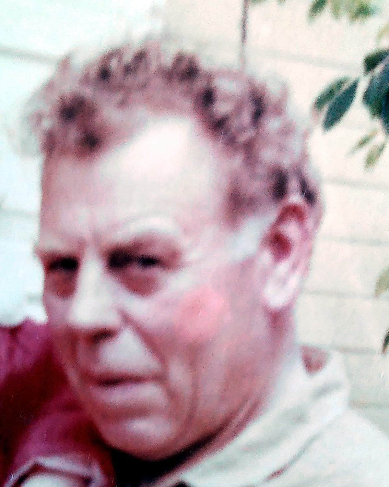
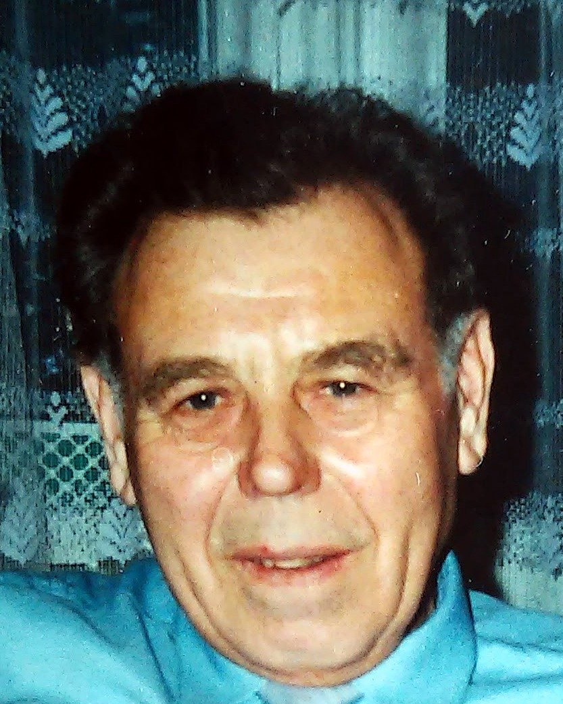
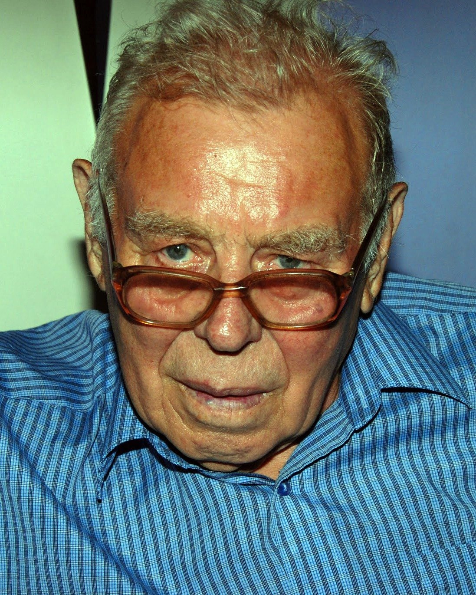
Семейный архив.
Цепочка родства от Ивана Карповича до Николая
По одному звену в строке, сверху вниз — от самого раннего известного предка к Николаю.
| Связь | Чем подтверждается | Надёжность |
|---|---|---|
| Карп → Иван Карпович и Афонасий Карпович | Известен только по отчеству сыновей. В ревизии 1811 года Карпа в семье уже нет: «Афонасей, Иван Карповы», по прошлой ревизии 1795 года им 35 и 28 лет. [3]вырезкаскан | не установлено |
| Иван Карпович и Домна Егоровна → Яков Иванович (~1797) | Ревизия 1811: «Ивановы дети: Иван, Яков, Кирила, Яков, Дарафей» [3]вырезкаскан. Ревизия 1816: «Ивана Карпова сыновья…», «Ивана Карпова жена Домна», «Якова Иванова жена Прасковья» [4]вырезкаскан. Исповедная ведомость 1819: «Иванова жена Домна Егорова, дети их: Яков, Кирила, Яков, Дорофей; Яковлева жена Праскева Антонова» [5]вырезкаскан | подтверждено |
| Яков Иванович (старший) и Праскева Антоновна → Никита (1830) | Метрика: 10 сентября 1830 года «у крестьянина Якова Иванова родился сын Никита» [6]вырезкаскан. Исповедные ведомости 1835–1865: Никита — среди детей «1-го Иакова», жена которого Праскева Антонова. В 1862 году — «вдова Праскева Антонова, дети её: Никита…» [7]вырезкаскан [8]вырезкаскан [9]вырезкаскан | подтверждено |
| Никита Яковлевич и Александра Ивановна → Иван (~1862–1864) | Исповедная ведомость 1865 года: «Никитина жена Александра Иванова, дети их: Андрей 13, Пелагея 9, Марина 8, Мария 7, Василий 5, Иван 3, Агрипина новорождённая» [9]вырезкаскан. При венчании 1889 года поручителем Ивана был его брат Андрей Никитин [10]вырезкаскан. Фамилия «Медков» у Никиты и его сыновей — в записях 1879–1904 годов | подтверждено |
| Иван Никитич ↔ Анна Адриановна; Адриан Матвеев → Анна | Запись о браке 1889 года в Воскресенской церкви села Раменье: жених — «рядовой 94-го пехотного Енисейского полка 3-й роты Иван Никитин Медков», 25 лет; невеста — «села Раменья крестьянина Адриана Матвеева дочь Анна», 20 лет [10]вырезкаскан | по документу |
| Иван Никитич и Анна Адриановна → Сергий (5.08.1897) | Метрика 1897 года: «Деревни Юренева запасный рядовой Иван Никитин и законная жена его Анна Адрианова». Фамилию даёт сопоставление с записями о других детях тех же родителей (1891, 1893, 1895) [11]вырезкаскан | подтверждено |
| Сергий (Юренево, 1897) = Сергей Иванович Медков, 1897 г. р., живший в 1941 году в Ханеве → Николай | Совпадают имя, отчество, фамилия и год. Юренево с 1929 года входит в Шаховской район — так место рождения записано в наградной картотеке. Сергей Иванович как отец Николая известен со слов семьи [1]вырезкаскан [2]вырезкаскан | вероятно по сведениям семьи |
| Лиза = Елизавета Симеоновна Филиппова (12.10.1904, д. Петровская) | Метрика 1904 года [12]вырезкаскан | вероятно |
| Сергей Иванович и Лиза → Леонид, Виктор, Валентин | Виктор Сергеевич назван вместе с Николаем Сергеевичем как наследник в судебном решении 2013 года [13]; это подтвердила и семья. Леонид и Валентин — братья со слов семьи | Виктор — подтверждено Леонид, Валентин — по сведениям семьи |


Почему это одни и те же люди. Деревня, приход и владелец совпадают во всех документах. Возраст Никиты сходится: метрика 1830 года, 4 года в 1835-м, 34 в 1862-м, 37 в 1865-м. Совпадают жена и дети: сын Константин, родившийся у «Никиты Яковлева и Александры Ивановой» в 1862 году, записан в ведомости того же года полугодовалым. Номер двора последовательно переходит из одной ведомости в другую. В соседних дворах Юренева других семей с Никитой Яковлевым и Праскевой Антоновой нет. Встречающийся в 1842 году «Ефремовский мещанин Никита Яковлев» с женой Екатериной Ивановной — другой человек.
Семья Ивана Карповича (по ревизиям и ведомостям 1811–1865)
| Кем приходится Николаю | Имя | Годы | Откуда известно |
|---|---|---|---|
| брат 4×прадеда | Афонасий Карпович | ок. 1760 — ок. 1836 | ревизии 1811, 1816; ведомости 1819–1835; вдовец, в 1825–1835 годах — глава двора по документу |
| сестра 4×прадеда | Аксинья (Ксения) Карповна | ок. 1766 | ревизия 1816 («Карповым сестра Аксинья», 50 лет); в 1819 году ей записано 80 лет — расхождение по документу |
| брат 3×прадеда | Иван Иванович | ок. 1794 | ревизия 1816: «в ополчении с 1812-го не воротился» по документу |
| брат 3×прадеда | Кирила Иванович | ок. 1798 | жена Матрона Игнатьевна; дети Евфросиния, Константин, Александра, Даниил по документу |
| брат 3×прадеда | Яков Иванович младший | ок. 1808 — после 1865 | жена Анна Флоровна; дети Пётр (1832), Козьма (1835), Иустин, Иоанн, Георгий по документу |
| брат 3×прадеда | Дорофей Иванович | ок. 1810 — после 1865 | жена Марья Александровна; дети Ульяна, Илья, Феодор, Козьма, Екатерина по документу |
| братья и сёстры прапрадеда Никиты | Настасья (~1825), Сергей (~1828, ум. 1836), Праскева (1832), Татьяна (1836), Евдокия, Иван (~1840, жена Елена Ивановна), Акилина (~1844) | ведомости 1831–1865, метрики 1832, 1836 по документу |
Даты до 1918 года — по старому стилю. Возраст в ревизиях и ведомостях приблизителен и колеблется на 1–3 года. Фамилия «Медков» в документах появляется только во второй половине XIX века; до этого крестьяне записаны по имени и отчеству («Яков Иванов»).
Документы в изображениях
Под каждой вырезкой — ссылка на полный разворот (открывается здесь же; кнопка «Крупнее» показывает лист в натуральную величину) и на страницу документа в архиве. Нажмите на вырезку, чтобы рассмотреть её.
Юренево: ревизские сказки и исповедные ведомости, 1811–1865
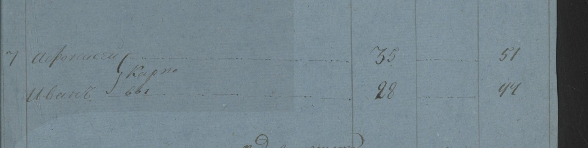

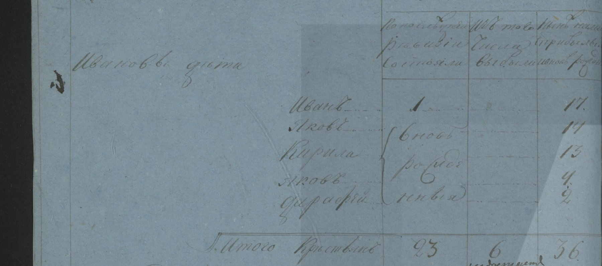

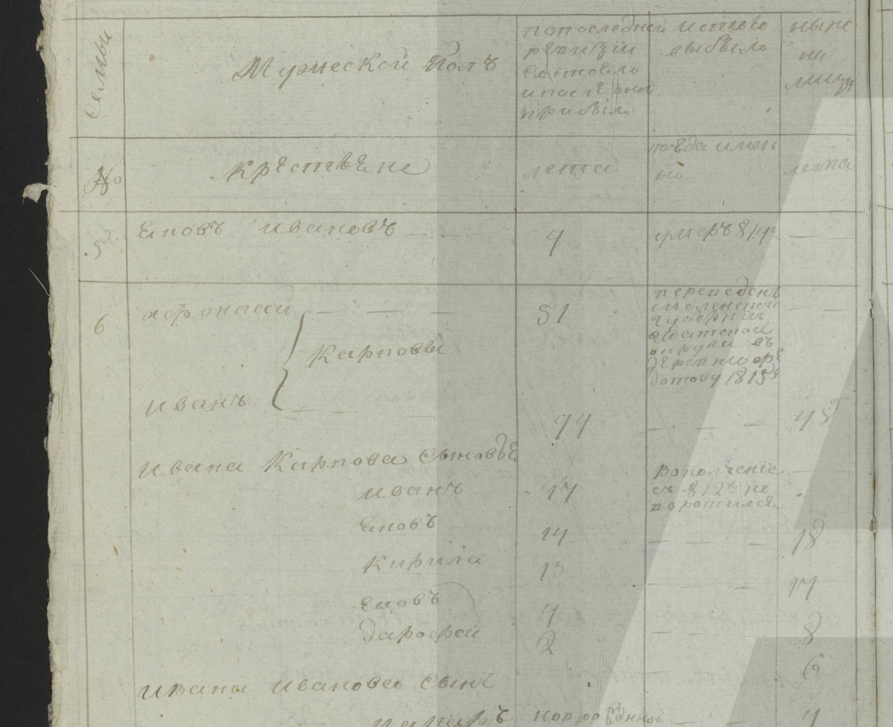

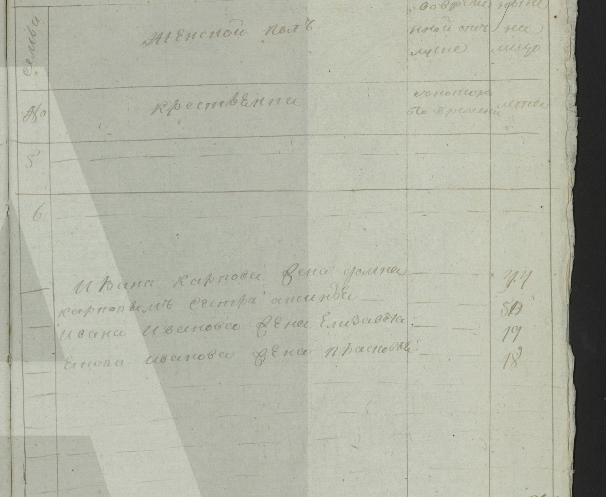
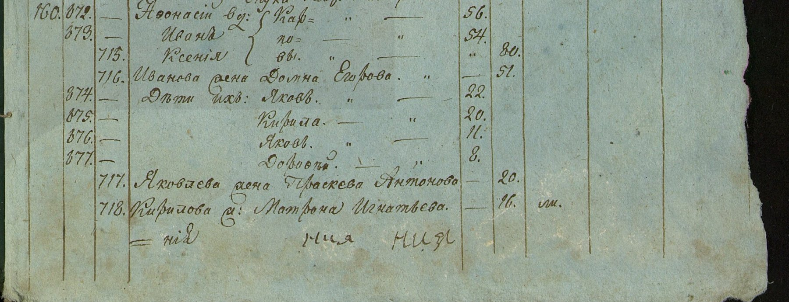
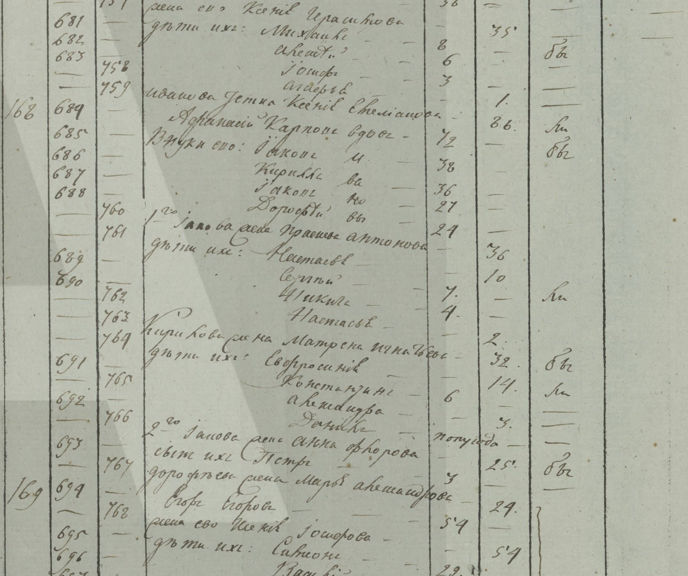
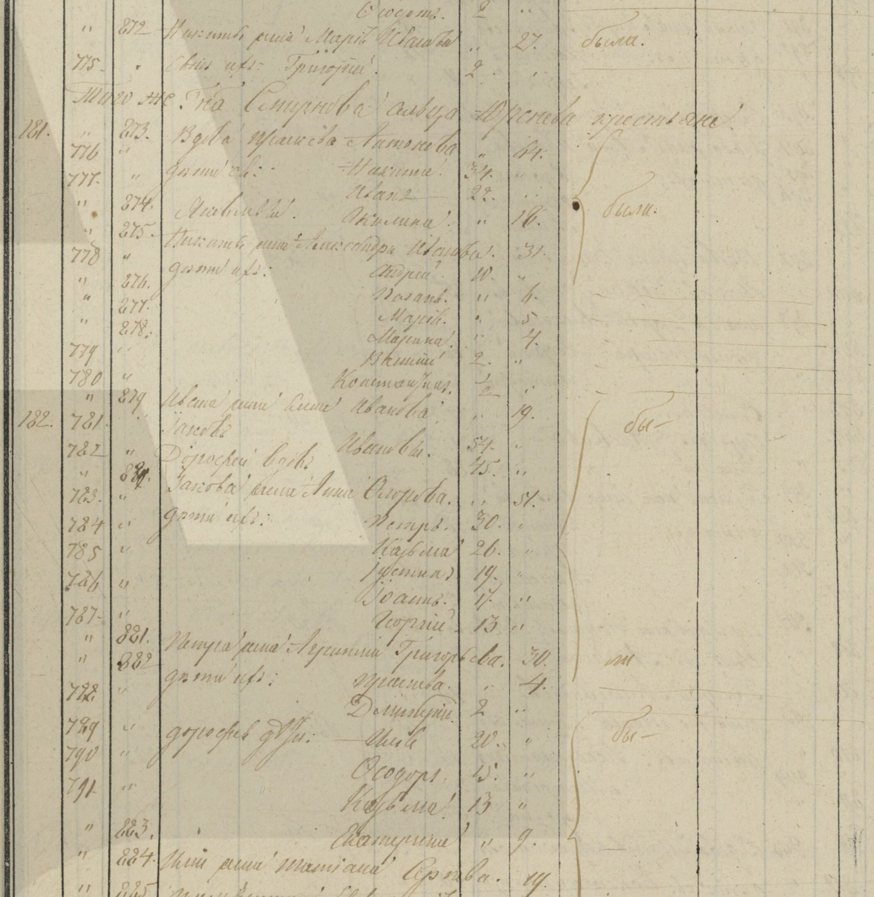
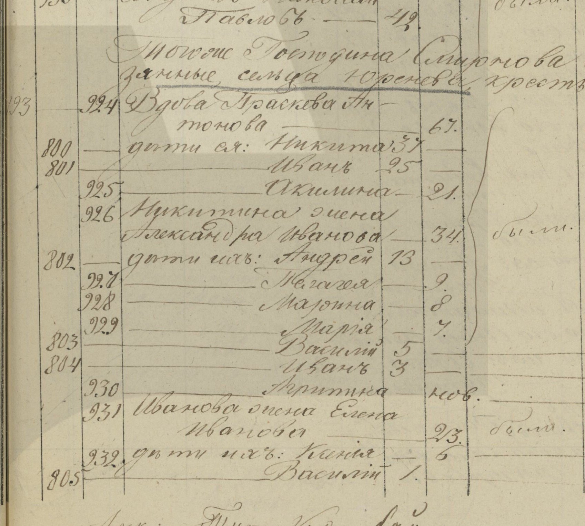
Метрические книги: Никита, Иван Никитич и его дети, 1830–1904
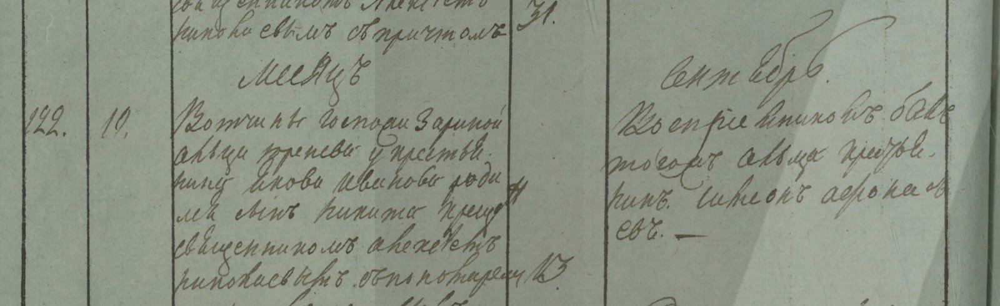
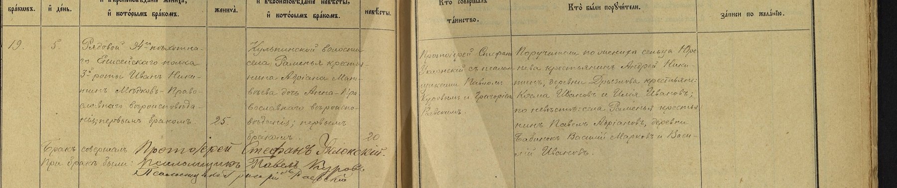

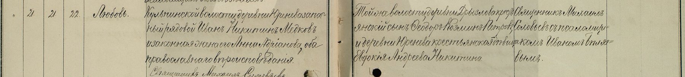


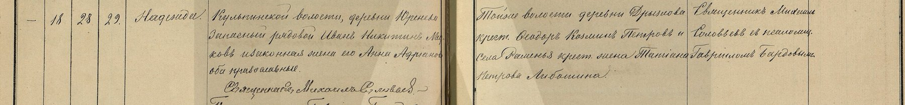


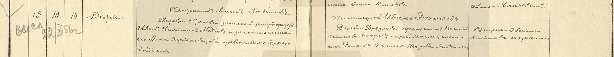

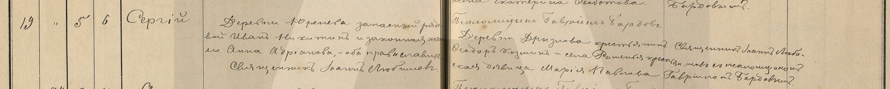

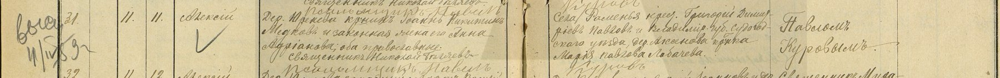

Род Лизы: деревня Петровская, 1856–1904

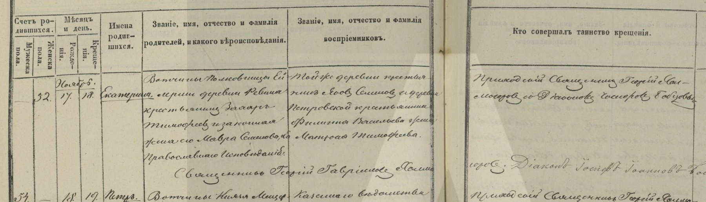


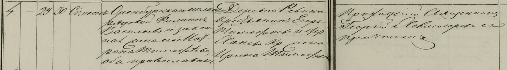


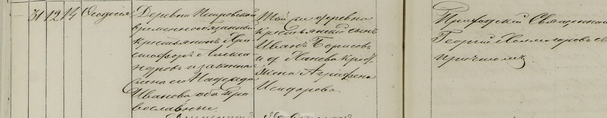


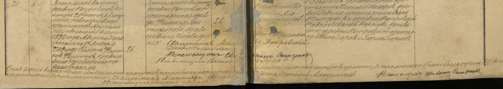

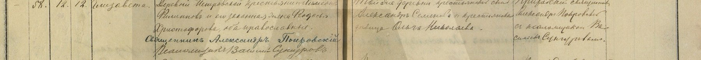
Сергей Иванович на войне, 1941–1945
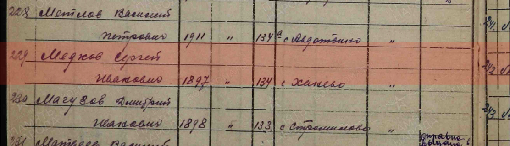
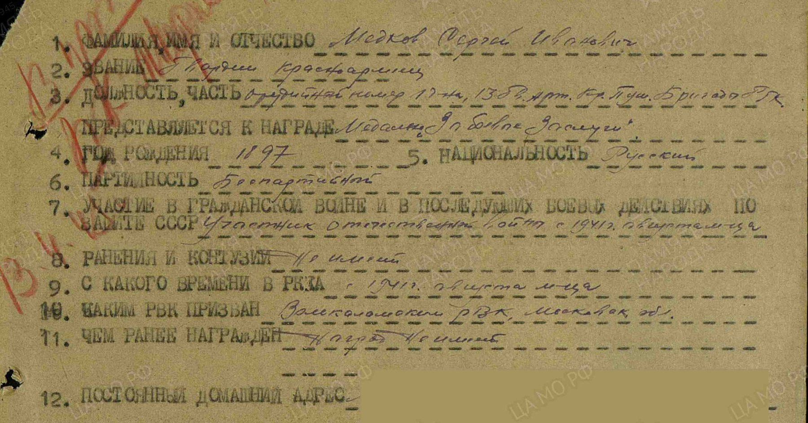

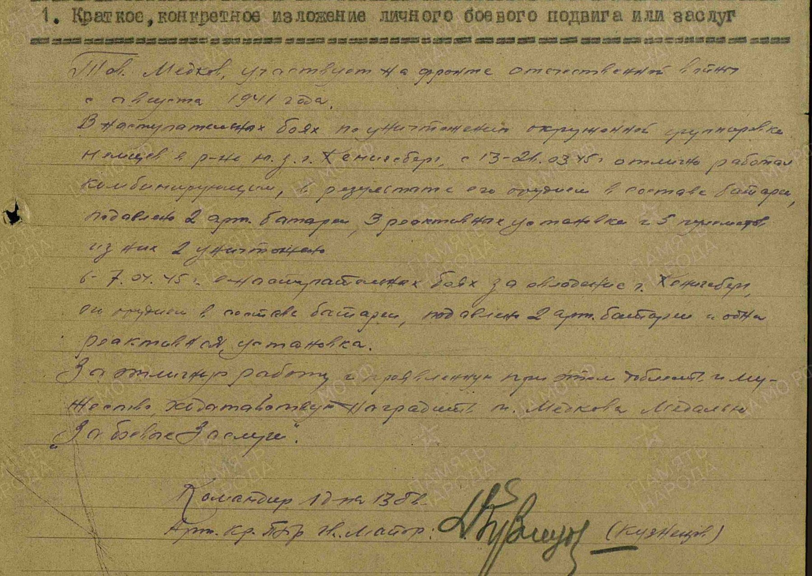
Расшифровка наградного листа
- 1. Фамилия, имя и отчество
- Медков Сергей Иванович
- 2. Звание
- Гвардии красноармеец
- 3. Должность, часть
- Орудийный номер 1 д-на, 13 Гв. Арт. Кр. Пуш. Бригады РГК
- Представляется к награде
- Медалью «За боевые заслуги»
- 4. Год рождения
- 1897
- 5. Национальность
- Русский
- 6. Партийность
- Беспартийный
- 7. Участие в гражданской войне и последующих боевых действиях по защите СССР
- Участник Отечественной войны с 1941 г. августа м-ца
- 8. Ранения и контузии
- Не имеет
- 9. С какого времени в РККА
- С 1941 г. августа м-ца
- 10. Каким РВК призван
- Волоколамским РВК, Московск. обл.
- 11. Чем ранее награждён
- Наград не имеет
- 12. Постоянный домашний адрес
- закрыт на сайте «Память народа»
Краткое, конкретное изложение личного боевого подвига или заслуг
Тов. Медков участвует на фронте Отечественной войны с августа 1941 года.
В наступательных боях по уничтожению окружённой группировки немцев в р-не ю.-з. г. Кенигсберг с 13–21.03.45 г. отлично работал комбинирующим [слово читается неуверенно], в результате его орудием в составе батареи подавлено 2 арт. батареи, 3 реактивных установки и 5 пулемётов, из них 2 уничтожено.
6–7.04.45 г. в наступательных боях за овладение г. Кенигсберг его орудием в составе батареи подавлено 2 арт. батареи и одна реактивная установка.
За отличную работу и проявленную при этом доблесть и мужество ходатайствую наградить т. Медкова медалью «За боевые заслуги».
Командир 1 д-на 13 Гв. Арт. Кр. Пуш. Бр. РГК майор [подпись] (Кузнецов)
«13 Гв. Арт. Кр. Пуш. Бригада РГК» — вероятно, 13-я гвардейская артиллерийская Краснознамённая пушечная бригада Резерва Главного командования; «Гв.» на листе похоже на «8». В тексте листа «его орудие … подавлено» — согласование сохранено по смыслу.
Род Лизы
Если Лиза — Елизавета Симеоновна, родившаяся в 1904 году (очень вероятно, но не доказано), то её семья по документам такова.
| Кем приходится Николаю | Имя | Годы | Откуда известно |
|---|---|---|---|
| мать | Елизавета Симеоновна Филиппова | род. 12.10.1904, д. Петровская | метрика Скорбященской ц. с. Федоровского [12]вырезкаскан вероятно — тождество с Лизой |
| дед | Симеон Филиппович Филиппов | род. 29.01.1869 | канонир Новогеоргиевской крепостной артиллерии в запасе; брак 6.06.1894 [14]вырезкаскан; рождение [15]вырезкаскан по документу |
| бабушка | Феодосия Христофоровна (возможно, Котова) | род. ок. мая 1872 | брак 1894 [14]вырезкаскан; рождение [16]вырезкаскан; фамилия «Котова» — только в одной московской ведомости фамилия — вероятно |
| прадед | Филипп Васильевич | в браке к 1856 | крестьянин д. Петровской, временнообязанный (1864), рядовой Оренбургского полка (1869) [15]вырезкаскан [17]вырезкаскан по документу |
| прабабка | Матрона Тимофеевна | в 1856 году — крёстная у дочери Захара Тимофеева из д. Ревино; крёстные её сына в 1869 году — Егор Тимофеев (Ревино) и Ирина Тимофеева (Ханево). Вероятно, она из семьи Тимофеевых деревни Ревино [17]вырезкаскан происхождение — вероятно | |
| прадед | Христофор Александрович | временнообязанный крестьянин д. Петровской; жена Надежда Гавриловна (в одной записи — Ивановна); дети Татиана, Георгий, Павел, Феодосия [16]вырезкаскан по документу | |
| братья и сёстры Лизы | Александр (~1895), Мария (1898), Алексей (1903), близнецы Михаил и Екатерина (1907) | метрики Федоровского прихода по индексу Яндекса; сканы не все сверены вероятно |
Медковы Юренева
Все Медковы деревни Юренево, найденные в метриках 1879–1918 годов, происходят от трёх сыновей Никиты Яковлевича. Сведения собраны по индексу Яндекса и сканам. Отдельные записи о детях сверены не все. по индексу
- Андрей Никитич (~1852), жена Анна Васильевна. Дети: Иван Андреевич (жена Татиана Петровна; в 1903–1918 годах их дети крестились и в Москве), Ксения (крёстная в 1897 году), Александр (в 1916 году — в Москве, в 1917–1928 — в документах Омского архива), Александра, Василий (крёстный в 1907 году), Клавдия (брак 1910), Агриппина (1887, умерла в 13 дней), Сергий (умер в младенчестве).
- Василий Никитич (~1860), жена Анна Петровна. Сыновья Василий (1889, умер в 7 месяцев) и Феодор (упоминается в 1908–1911 годах).
- Иван Никитич (~1862–1864), жена Анна Адриановна. Дети: Пётр (1890, умер в 11 недель), Любовь (21.09.1891), Надежда (28.08.1893), Вера (10.08.1895), Сергий (5.08.1897), Алексей (11.03?.1904). В 1902 году крёстной в Юреневе была «девица Наталия Иванова Медкова». Чья она дочь, не установлено.
- Дочери Никиты: Мария (брак 1887), Пелагея, Марина, Агрипина (1865).
В Ханеве до 1926 года Медковых в документах нет. Сергей Иванович, по-видимому, переселился туда из Юренева во взрослом возрасте.
Хронология
| Когда | Что и где | Надёжность |
|---|---|---|
| 1795 | 5-я ревизия: Афонасию Карповичу 35 лет, Ивану Карповичу 28 (по ревизии 1811 года) | по документу |
| 1811 | 6-я ревизия: Юренево надворного советника М. Г. Зарина, семья 7 — Афонасий и Иван Карповы, сыновья Ивана | по документу |
| 1812 | старший сын Ивана Карповича, Иван, взят в ополчение и не вернулся | по документу |
| март 1816 | 7-я ревизия: Яков Иванович (18 лет) уже женат на Прасковье (18 лет) | по документу |
| 1822–1825 | умер Иван Карпович; в ведомости 1825 года Домна — вдова | по документу |
| 10 сент. 1830 | родился Никита, сын Якова Иванова, Юренево (вотчина Зариной) | подтверждено |
| 1832–1834 | часть Юренева, где жила семья, переходит от Зариной к М. А. Смирнову (в метриках 1832 года — «вотчины госпожи Зариной», в 1834 году — «вотчины г-на Смирнова») | по документу |
| ок. 1850–1851 | Никита женится на Александре Ивановне | по документу |
| 1855–1862 | умер Яков Иванович; в 1862 году Праскева — вдова, семья временнообязанная | по документу |
| ок. 1862–1864 | родился Иван Никитич (3 года в 1865-м; 25 лет при браке в 1889-м) | подтверждено |
| 1887 | Иван Никитин Медков — рядовой на службе в Выборге | по индексу |
| 1889 | брак Ивана Никитина Медкова и Анны Адриановой, с. Раменье | по документу |
| 6 июня 1894 | брак Симеона Филиппова и Феодосии Христофоровой, д. Петровская | по документу |
| 5 авг. 1897 | родился Сергий, сын Ивана Никитина и Анны Адриановой, Юренево | по документу |
| 12 окт. 1904 | родилась Елизавета, дочь Симеона Филиппова, д. Петровская | по документу |
| ок. 1927 | брак Сергея и Лизы (оценка по году рождения старшего сына) | по сведениям семьи |
| 19 дек. 1928 | родился Николай Сергеевич | по сведениям семьи |
| авг.–сент. 1941 | Сергей Иванович Медков из с. Ханево призван Волоколамским РВК (6 августа или 3 сентября — списки расходятся) | по документу |
| март–апр. 1945 | бои под Кёнигсбергом; представление к медали «За боевые заслуги» | по документу |
| годы неизвестны | служба в Восточной Германии, затем перевод в Беларусь | по сведениям семьи |
| май 2019 | Николай Сергеевич умер | по сведениям семьи |
Места
| Как в документе | Принадлежность на дату события | Позже |
|---|---|---|
| сельцо Юренево, деревня Юренева | Московская губ., Волоколамский у.; после 1861 года — Кульпинская волость; приход Троицкой церкви с. Никольского (Ново-Никольское); владельцы — Зарины (до 1830-х), Смирновы; другие части деревни — Зверев, Румянцев | с 1929 года — Шаховской район (по наградной картотеке) |
| село Ханево | Волоколамский у., Ярополецкая волость; приход Скорбященской церкви с. Федоровского | Волоколамский район (1941), Волоколамский городской округ (перечень земельных участков, 2023) |
| деревня Петровская | Волоколамский у., Ярополецкая волость; приход с. Федоровского | |
| село Раменье | Волоколамский у., Кульпинская волость; Воскресенская церковь |
Военная служба
Иван Никитич Медков в 1887 году служил рядовым в Выборге, в 1889 году — рядовым 3-й роты 94-го пехотного Енисейского полка. С 1890 года он запасный рядовой, в 1895 году — запасный унтер-офицер. по документу
Сергей Иванович Медков призван Волоколамским РВК в 1941 году: в одном списке — 3 сентября, в другом — 6 августа. В апреле 1945 года он гвардии красноармеец, орудийный номер 13-й гвардейской артиллерийской бригады РГК, на фронте с августа 1941 года, ранений нет. Представлен к медали «За боевые заслуги» за бои под Кёнигсбергом 13–21 марта и 6–7 апреля 1945 года. по документу [2]вырезкаскан
Документы о семье
| Документ | Когда | Что из него следует | Где хранится |
|---|---|---|---|
| Ревизская сказка (6-я ревизия) | 1811 | Иван и Афонасий Карповы, сыновья Ивана | ЦГА Москвы, ф. 51, оп. 8, д. 11, л. 584–586 |
| Ревизская сказка (7-я ревизия) | март 1816 | семья Ивана Карпова с жёнами сыновей | ЦГА Москвы, ф. 51, оп. 8, д. 78, л. 218 |
| Исповедные ведомости | 1819, 1835, 1862, 1865 | состав двора по годам; два Якова; дети Никиты | ЦГА Москвы, ф. 207, оп. 1, д. 3019; ф. 203, оп. 747, дд. 1263, 1842, 1901 |
| Метрика о рождении Никиты | сентябрь 1830 | отец — Яков Иванов | ЦГА Москвы, ф. 203, оп. 745, д. 1330 |
| Запись о браке | 1889 | Иван Никитин Медков и Анна, дочь Адриана Матвеева | ЦГА Москвы, ф. 203, оп. 780, д. 488 |
| Метрики о рождении детей Ивана Никитина | 1891, 1893, 1895, 1897, 1904 | Любовь, Надежда, Вера, Сергий, Алексей | ЦГА Москвы, ф. 203, оп. 780, дд. 2042, 2060, 2070, 2088, 3219 |
| Метрики Федоровского прихода | 1869, 1872, 1894, 1904 | Симеон, Феодосия, их брак, Елизавета | ЦГАМО ф. 8926, оп. 1, дд. 228, 229; ЦГА Москвы, ф. 203, оп. 780, д. 2063 и том 1904 г. |
| Список призыва, наградной лист | 1941–1945 | Сергей Иванович Медков, 1897, Ханево | ЦАМО (через «Память народа») |
Нестыковки в документах
- Место рождения Сергея Ивановича. Один индекс ВОВ называет местом рождения с. Ханево, наградная картотека — Шаховской район. Метрика 1897 года — Юренево (с 1929 года Шаховской район). В Ханеве в 1897 году Сергий у Медковых не родился. Скорее всего, в индексе с Ханевом указано место жительства в 1941 году. Различить могли бы документы о переезде семьи в Ханево (1910–1930-е).
- Возраст Ивана Никитича. В 1865 году ему 3 года (рождение около 1862), при браке в 1889 году — 25 лет (около 1864). Метрик Волоколамского уезда за 1863–1870 годы в ЦГА Москвы нет.
- Афонасий Карпович. По ревизии 1816 года он «переведён в Смоленскую губернию Гжатской округи в деревню Федотову в 1815 году», но в ведомостях 1819–1835 годов снова живёт в Юреневе. В 1835 году его племянники записаны «внуками».
- Дата призыва Сергея Ивановича. Список призыва Волоколамского РВК — 3 сентября 1941 года, именной список запасного полка 1943 года — 6 августа 1941 года; в наградном листе «на фронте с августа 1941».
- Мать Феодосии Христофоровны в разных записях — «Надежда Гавриловна» и «Надежда Ивановна».
Где искали и не нашли
| Где | Что искали | Почему это ещё не ответ |
|---|---|---|
| ЦГАМО ф. 8926 (Ярополецкий ЗАГС), 1918–1926 | старших братьев или сестру Николая; брак Сергея и Лизы | опись кончается 1926 годом; Николай (1928) — старший ребёнок, так что до 1926 года детей и не ожидалось; Кульпинского ЗАГС 1920-х онлайн нет |
| «Память народа» | братьев Медковых Сергеевичей 1916–1928 г. р. | подходящих нет; братья, вероятно, моложе Николая и в войну не служили |
| Ревизии 1834, 1850, 1858 годов | часть Юренева, принадлежавшую Смирнову | сказки помещиков на буквы С–Я за 1834 год и сказки 1850–1858 годов онлайн не выложены |
| Ревизии 1795 и 1782 годов | Карпа, отца Ивана Карповича | в ЦГА Москвы их нет; ревизии XVIII века хранятся в РГАДА (ф. 350) |
| Метрики 1863–1870 годов | рождение Ивана Никитича | по Волоколамскому уезду в ЦГА Москвы не сохранились или не поступали; исповедные ведомости 1863 и 1864 годов не оцифрованы |
| Метрики 1831–1832 годов | детей старшего Якова | найдена дочь Праскева (1832); сын Иаков, рождённый 29.04.1831 у «Иакова Иванова», не отнесён ни к одному из братьев |
Что можно сделать дальше
В семье
- Свидетельства о рождении Николая и его братьев, военный билет или удостоверение офицера Николая (там будут части и годы службы в Германии и Беларуси), свидетельство о браке Сергея и Лизы. Девичья фамилия Лизы в любом из этих документов сразу проверит гипотезу о Филипповых.
Запросить в архивах
- Главное управление ЗАГС Московской области (архив): актовая запись о рождении Николая Сергеевича Медкова, 19.12.1928, Шаховской (или Волоколамский) район; запись о браке Медкова Сергея Ивановича и Елизаветы Семёновны, около 1926–1928.
- ЦГА Москвы, читальный зал: ревизские сказки 1850 и 1858 годов по Волоколамскому уезду (крестьяне М. А. Смирнова, сельцо Юренево); ф. 203, оп. 780, д. 366 и следующие (метрики с 1871 года — Ново-Никольское).
- РГАДА, ф. 350: ревизия 1795 (и 1782) года по Волоколамскому уезду, вотчина Зариных (сельцо Юренево) — для поколения Карпа.
Источники
- Список призыва Волоколамского РВК, строка 229: Медков Сергей Иванович, 1897, с. Ханево, призван 3.09.1941. ЦАМО. pamyat-naroda.ru к изображениювырезкаскан
- Наградной лист, медаль «За боевые заслуги», апрель 1945, 13 гв. абр РГК. ЦАМО. pamyat-naroda.ru к изображениювырезкаскан
- Ревизская сказка 1811 г., сельцо Юренево М. Г. Зарина, семья 7. ЦГА Москвы, ф. 51, оп. 8, д. 11, сканы 599–600. ya.ru/archive к изображениювырезкаскан
- Ревизская сказка 1816 г., сельцо Юренево М. Г. Зарина, семья 6. ЦГА Москвы, ф. 51, оп. 8, д. 78, скан 224. ya.ru/archive к изображениювырезкаскан
- Исповедная ведомость 1819 г., вотчина М. Г. Зарина, двор 160. ЦГА Москвы, ф. 207, оп. 1, д. 3019, скан 17. ya.ru/archive к изображениювырезкаскан
- Метрическая книга Троицкой ц. с. Никольского, 1830, рождения, № 122 (Никита). ЦГА Москвы, ф. 203, оп. 745, д. 1330, скан 755. ya.ru/archive к изображениювырезкаскан
- Исповедная ведомость 1835 г., Юренево, двор 168. ЦГА Москвы, ф. 203, оп. 747, д. 1263, скан 700. ya.ru/archive к изображениювырезкаскан
- Исповедная ведомость 1862 г., Юренево г-на Смирнова, дворы 181–182. ЦГА Москвы, ф. 203, оп. 747, д. 1842, скан 876. ya.ru/archive к изображениювырезкаскан
- Исповедная ведомость 1865 г., Юренево г-на Смирнова, двор 193. ЦГА Москвы, ф. 203, оп. 747, д. 1901, скан 846. ya.ru/archive к изображениювырезкаскан
- Метрическая книга Воскресенской ц. с. Раменье, 1889, браки, № 19. ЦГА Москвы, ф. 203, оп. 780, д. 488, скан 208. ya.ru/archive к изображениювырезкаскан
- Метрическая книга Троицкой ц. с. Никольского, 1897, рождения, № 19 (Сергий); там же 1891, 1893, 1895 (Любовь, Надежда, Вера). ЦГА Москвы, ф. 203, оп. 780, дд. 2088 (скан 232), 2042, 2060, 2070. ya.ru/archive к изображениювырезкаскан
- Метрическая книга Скорбященской ц. с. Федоровского, 1904, рождения, № 58 (Елизавета). ЦГА Москвы, ф. 203, оп. 780 (том 1904 г.), скан 304. к изображениювырезкаскан
- Решение городского суда, 2013 год (наследство). Номер дела хранится в материалах исследования.
- Метрическая книга Скорбященской ц. с. Федоровского, 1894, браки, № 31. ЦГА Москвы, ф. 203, оп. 780, д. 2063, скан 284; копия ЦГАМО ф. 8926, оп. 1, д. 233. к изображениювырезкаскан
- Метрическая книга Федоровского прихода, 1869, рождения, № 4 (Симеон). ЦГАМО, ф. 8926, оп. 1, д. 228, скан 286. к изображениювырезкаскан
- Метрическая книга Федоровского прихода, 1872, рождения, № 31 (Феодосия). ЦГАМО, ф. 8926, оп. 1, д. 229, скан 139. к изображениювырезкаскан
- Метрическая книга Скорбященской ц. с. Федоровского, 1856, рождения, № 52 (крёстная Матрона Тимофеева). ЦГА Москвы, ф. 203, оп. 745, д. 1970, скан 812. ya.ru/archive к изображениювырезкаскан
Полные сканы всех перечисленных листов сохранены в папке дела artifacts/full, вырезки — в artifacts. Реестры лиц, документов, утверждений и связей и журнал поиска ведутся в CSV-файлах дела. Выводы о Лизе и о тождестве Сергея Ивановича изменятся, если найдутся записи ЗАГС 1926–1928 годов. О живых родственниках собраны только имена и степень родства; адреса, участки и данные других участников судебного дела в отчёт не включены.